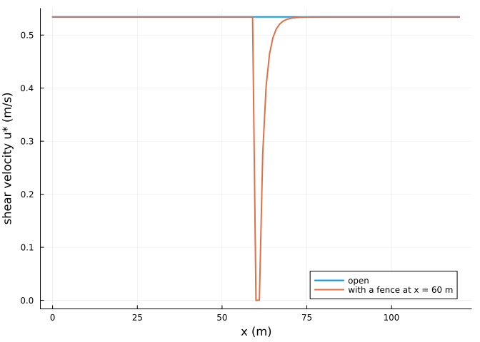
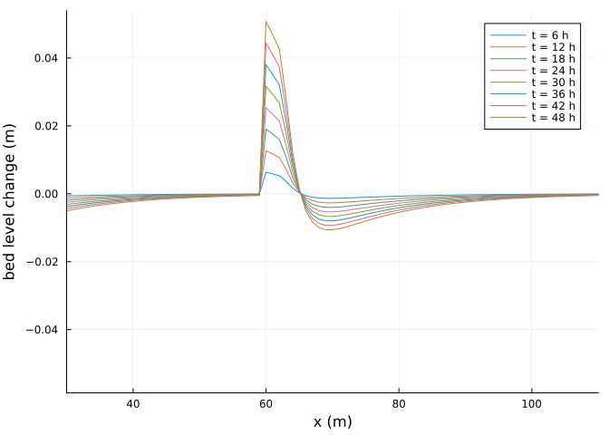
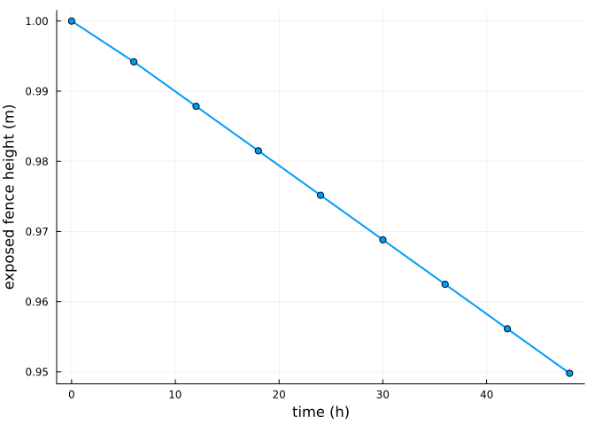

Sand fences
Simon Frost
Overview
Sand fences are a common way to build dunes. In AeoLiS a fence reduces the shear velocity in its lee following Okin’s model of porous roughness elements (Okin 2008), computed on a grid aligned with the wind, and is buried as sand accumulates around it; a fence lower than 0.1 m no longer acts. This vignette places a fence on a beach and compares the deposition with an open beach.
ENV["GKSwstype"] = "100"
using Aeolis
using Plotsx = collect(0.0:1.0:120.0)
zb = fill(2.0, length(x))
fence = zeros(length(x))
fence[61] = 1.0 # a 1 m fence at x = 60 m
base = (; xgrid_file=x, bed_file=zb, wind_file=[0.0 12.0 270.0; 30 * 86400.0 12.0 270.0],
grain_size=0.0003, dt=1800.0, tstop=2 * 86400.0, output_times=6 * 3600.0,
output_vars=[:zb, :ustar, :fence_height, :qs], dx=1.0)
open_beach = solve(AeolisProblem(AeolisParameters(; base...)))
fenced = solve(AeolisProblem(AeolisParameters(; base..., process_fences=true,
fence_file=fence)))AeolisSolution with 9 output times from 0.0 to 172800.0 s, retcode Success
saved: fence_height, qs, ustar, zbSheltering
plot(x, transect(open_beach, :ustar)[:, 2]; lw=2, label="open", xlabel="x (m)",
ylabel="shear velocity u* (m/s)")
plot!(x, transect(fenced, :ustar)[:, 2]; lw=2, label="with a fence at x = 60 m")
The shear velocity drops behind the fence and recovers over some ten fence heights.
Deposition and burial
dz = transect(fenced, :zb) .- zb
plot(x, dz[:, 2:end]; xlabel="x (m)", ylabel="bed level change (m)",
label=permutedims(["t = $(Int(t / 3600)) h" for t in fenced.t[2:end]]), xlims=(30, 110))
plot(fenced.t ./ 3600, transect(fenced, :fence_height)[61, :]; lw=2, marker=:circle,
xlabel="time (h)", ylabel="exposed fence height (m)", label="")
The deposit holds sand that the wind brought to the fence:
rhob = 2650.0 * (1 - 0.4)
trapped = sum(max.(dz[45:80, end], 0.0)) * rhob # kg per metre of fence, 1 m cells
round(trapped; digits=1)290.1On this beach the bed downwind of the fence is as loose as the bed upwind, so the wind picks up a new load past the fence and the flux leaving the transect barely changes:
out(sol) = sum(transect(sol, :qs)[end - 1, 1, 2:end]) * 6 * 3600.0
(open=round(out(open_beach); digits=1), fenced=round(out(fenced); digits=1))(open = 1058.1, fenced = 1053.6)A fence protects what lies behind it only where the supply there is limited, for example a vegetated or armoured backbeach.
References
Okin, Gregory S. 2008. “A New Model of Wind Erosion in the Presence of Vegetation.” Journal of Geophysical Research: Earth Surface 113: F02S10. https://doi.org/10.1029/2007JF000758.